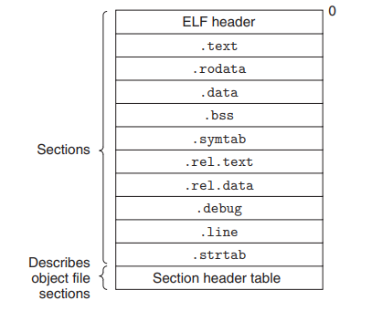

Chapter2 ARM裸机开发
ARM裸机开发
ARM裸机开发，也就是不带操作系统开发，本文以I.MX6ULL芯片为例进行裸机开发。ARM裸机开发和MCU开发类似，如果有MCU开发经验的话学起来会很容易。
注意这里的ARM裸机指的是可以运行Linux操作系统的ARM架构，MCU常见的也是ARM架构（也有RISC-V等等架构），如何区架构能不能运行Linux呢？————看芯片架构是否存在MMU（memory management unit）单元。MMU的存在使得Linux可以运行在处理器上。例如MCU常见内核为Cortex-M，不带MMU；MPU、SoC常见内核为Cortex-A，带MMU。
从ARM裸机开发入手，而非ARM移植Linux下开发，原因如下。
1、裸机开发是了解所使用的 CPU 最直接、最简单的方法，比如 I.MX6U，跟STM32一样，裸机开发是直接操作 CPU 的寄存器。Linux 驱动开发最终也是操作的寄存器，但是在操作寄存器之前要先编写一个符合 Linux 驱动的框架。同样一个点灯驱动，裸机可能只需要十几行代码，但是 Linux 下的驱动就需要几十行代码。
2、大部分Linux驱动初学者都是从MCU转过来的，Linux驱动开发和MCU开发区别很大，比如没有 MDK、IAR 这样的集成开发环境，需要我们自己在Ubuntu下搭建交叉编译环境。直接上手Linux驱动开发可能会因为较大的差异而无从下手。
3、裸机开发是连接 Cortex-M（如 STM32）单片机和 Cortex-A(如 I.MX6U)处理器的桥梁，通过ARM裸机开发也可以反哺MCU，掌握很多集成开发环境没有告诉你的“干货”。
MCU：控制为核心，单片化集成。CPU 核心 + 小容量 RAM/ROM + 常用外设 全部集成在一颗芯片上，无需外接核心元器件即可工作。
MPU：运算为核心，裸核需扩展。单纯的 CPU 核心，只负责数据运算，没有内置 RAM、ROM、外设，必须外接内存（DDR）、存储（Flash/EMMC）、外设芯片（如网卡、串口）才能工作。
SoC：芯片上集成完整系统（片上系统）。高度集成的芯片，把 多核CPU + GPU + NPU + 内存控制器 + 存储控制器 + 通信模块（WiFi / 蓝牙 / 4G/5G） + 外设（USB/HDMI） 等整个系统的核心元器件全部集成在一颗芯片上
1. 交叉编译工具链
我们需要一个在X86架构（主流PC架构）上运行，可以编译ARM架构代码的GCC编译器，这个编译器就叫做交叉编译器
交叉编译器中“交叉”的意思就是在一个架构上编译另外一个架构的代码，相当于两种架构“交叉”起来了。
- 交叉编译器 是一个 GCC 编译器。
- 这个 GCC 编译器是运行在 X86 架构的 PC 上的。
- 这个 GCC 编译器是编译 ARM 架构代码的，也就是编译出来的可执行文件是在 ARM 芯片上运行的。
交叉编译器有很多种，我们使用 Linaro 出品的交叉编译器，Linaro 是一间非营利性质的开放源代码软件工程公司，Linaro 开发了很多软件，最著名的就是 Linaro GCC 编译工具链(编译器)
1.1 Ubuntu 安装交叉编译器
# 将交叉编译器复制到/opt 这个目录
sudo cp gcc-linaro-4.9.4-2017.01-x86_64_arm-linux-gnueabihf.tar.xz /opt/ -f
# cd /opt/ 解压交叉编译器
sudo tar -vxf gcc-linaro-4.9.4-2017.01-x86_64_arm-linux-gnueabihf.tar.xz
# 修改环境变量
sudo vi /etc/profile
# 添加至文件末尾
export PATH=$PATH:/opt/gcc-linaro-4.9.4-2017.01-x86_64_arm-linux-gnueabihf/bin
修改好以后就保存退出":wq"，重启系统，交叉编译工具链(编译器)就安装成功了
1.2 编译器 汇编-链接-转换
-
汇编生成目标文件
我们是要编译出在 ARM 开发板上运行的可执行文件，所以要使用交叉编译器 arm-linux-gnueabihf-gcc 来编译。
-
链接目标文件
MCU开发时，我们编写好代码，然后点击“编译”，MDK 或者 IAR 就会自动帮我们编译好整个工程，最后再点击“下载”就可以将代码下载到开发板中。这是因为链接这个操作 MDK 或者 IAR 已经帮你做好了。可以打开一个 STM32 的工程，然后编译一下，肯定能找到很多.o 文件。
IAR或者MDK中，我们可以通过 .map 文件查看编译信息。可以打开.map 文件查看一下这些文件的链接地址，一般.o文件是从 0X08000000 开始链接的。而 0X08000000 就是 STM32 内部 ROM 的起始地址，编译出来的指令肯定是要从 0X08000000 这个地址开始存放的。对于STM32 来说 0X08000000 就是它的链接地址，这些.o 文件就是这个链接地址开始依次存放，最终生成一个可以下载的 hex 或者 bin 文件，
Linux 下用交叉编译器开发 ARM 的是时候就需要自己处理这些，arm-linux-gnueabihf-ld 用来将众多的.o 文件链接到一个指定的链接位置。我们现在需要做的就是确定一下最终的可执行文件其运行起始地址，也就是 链接地址。
注意区分“存储地址”和“运行地址”这两个概念，“存储地址”就是可执行文件存储在哪里，可执行文件的存储地址可以随意选择。“运行地址”就是代码运行的时候所处的地址，这个我们在链接的时候就已经确定好了，代码要运行，那就必须处于运行地址处，否则代码肯定运行出错。
-
elf文件格式转换
ELF （Executable and Linkable Format）文件，也就是在 Linux 中的目标文件，是一种用于二进制文件、可执行文件、目标代码、共享库和核心转储格式文件的文件格式。主要有以下三种类型
1 可重定位文件（Relocatable File），包含由编译器生成的代码以及数据。链接器会将它与其它目标文件链接起来从而创建可执行文件或者共享目标文件。在 Linux 系统中，这种文件的后缀一般为 .o 。
2 可执行文件（Executable File），就是我们通常在 Linux 中执行的程序。
3 共享目标文件（Shared Object File），包含代码和数据，这种文件是我们所称的库文件，一般以 .so 结尾。
ELF是UNIX系统实验室（USL）作为应用程序二进制接口（Application Binary Interface，ABI）而开发和发布的，也是Linux的主要可执行文件格式。
由于.elf 文件也不是我们最终烧写到 SD 卡中的可执行文件，我们要烧写的.bin 文件，因此还需要将 led.elf 文件转换为.bin 文件，这里我们就需要用到 arm-linux-gnueabihf-objcopy 这个工具,它更像一个格式转换工具
arm-linux-gnueabihf-objcopy -O binary -S -g led.elf led.bin # “-O”选项指定以什么格式输出，后面的“binary”表示以二进制格式输出， # “-S”表示不要复制源文件中的重定位信息和符号信息 # “-g”表示不复制源文件中的调试信息。 arm-linux-gnueabihf-objdump -D led.elf > led.dis # 大多数情况下我们都是用 C 语言写试验例程的，有时候需要查看其汇编代码来调试代码， # 因此就需要进行反汇编，一般可以将 elf 文件反汇编 # 打开生成的.dis文件，可以发现是汇编代码，而且还可以看到内存分配情况。 # 在0X87800000 处就是全局标号_start，也就是程序开始的地方。通过 led.dis 这个反汇编文件可以 # 明显的看出我们的代码已经链接到了以 0X87800000 为起始地址的区域。
1.3 Makefile 脚本化编译操作
如果我们修改了源文件，那么就需要在重复一次编译-链接-格式转换的这些命令，太麻烦了，这个时候我们就可以使用 Makefile 文件了。把它理解为自动化脚本即可，类似 python 或 bash。
led.bin:led.s
arm-linux-gnueabihf-gcc -g -c led.s -o led.o
arm-linux-gnueabihf-ld -Ttext 0X87800000 led.o -o led.elf
arm-linux-gnueabihf-objcopy -O binary -S -g led.elf led.bin
arm-linux-gnueabihf-objdump -D led.elf > led.dis
clean:
rm -rf led.elf led.dis led.bin *.o
创建好 Makefile 以后我们就只需要执行一次 “make” 命令即可完成编译。
如果我们要清理工程的话执行 “make clean” 即可。
在Linux环境下，当我们输入make命令时，它就在当前目录查找一个名为Makefile的文件，然后，根据这个文件定义的规则，自动化地执行任意命令，包括编译命令。
2. ASM汇编初始化C环境
实际工程中是很少用到汇编去写嵌入式驱动的，毕竟汇编是低级语言，编写起来太难，而且写出来也不好理解，大部分情况下都是使用 C 语言去编写的。
汇编只是在开始部分用来初始化一下 C 语言环境，比如初始化 DDR、设置堆栈指针 SP 等等，当这些工作都做完以后就可以进入 C 语言环境，也就是运行 C 语言代码，一般都是进入 main 函数。
所以工程中，我们需要汇编文件和C文件。
- 汇编文件只是用来完成 C 语言环境搭建。
/*
* 描述： _start函数，程序从此函数开始执行，此函数主要功能是设置C运行环境。
* 本示例不考虑中断向量表，故较为简洁
*/
_start:
/* 进入SVC模式 */
mrs r0, cpsr
bic r0, r0, #0x1f /* 将r0寄存器中的低5位清零，也就是cpsr的M0~M4*/
orr r0, r0, #0x13 /* r0或上0x13,表示使用SVC模式*/
msr cpsr, r0 /* 将r0 的数据写入到cpsr_c中*/
/* 设置栈指针，
* 注意：IMX6UL的堆栈是向下增长的！
* 堆栈指针地址一定要是4字节地址对齐的！！！
* DDR范围:0X80000000~0X9FFFFFFF
*/
ldr sp,=0X80200000 /* 设置用户模式下的栈首地址为0X80200000,大小为2MB*/
b main /* 跳转到main函数*/
- C 语言文件就是完成我们的业务层代码的，其实就是我们实际例程要完成的功能。其实 STM32 也是这样的，以 STM32F103 为例，其启动文件 startup_stm32f10x_hd.s 这个汇编文件就是完成 C 语言环境搭建的，当然还有一 些其他的处理，比如中断向量表等等。当 startup_stm32f10x_hd.s 把 C 语言环境初始化完成以后就会进入 C 语言环境。
2.1 elf文件链接视图

-
.text
代码段（code segment/text segment）用于存放可执行程序，也就是对应架构下程序的指令序列。代码段包含在可执行程序中，大小是确定的；加载到进程中之后，所在内存区域通常被MMU设置为只读，以保护代码段不会被意外改写（如出错时）。当然，没有MMU的系统，就没有这种写保护。代码段也可能包含一些只读的常量，如字符串常量等。
-
.rodata
常量区rodata段存放的是只读数据，比如字符串常量、全局const变量。常量区在程序中大小确定；在进程中内存只读。
-
.data
数据段（data segment）用于存放编译时就能确定的全局数据，包括已初始化的全局变量和静态变量。数据段包含在可执行程序中，大小是确定的；加载到进程中，所在内存区域可读可写。数据段属于静态内存分配。
-
.bss
Block Started by Symbol的缩写（奇怪的历史遗留），用于存放编译阶段无法确定的全局数据，包括未初始化的全局变量和静态变量。可执行程序不含bss段，只记录区域大小；进程为bss段开辟内存空间，并清零。从优化的角度出发，初始化为零的全局变量，也会被放进bss段从大压缩可执行文件的大小。
2.2 链接脚本
arm-linux-gnueabihf-ld -Ttext 0X87800000 led.o -o led.elf语句中我们是通过“-Ttext”来指定链接地址是 0X87800000 的，这样的话所有的文件都会链接到以 0X87800000 为起始地址的区域。但是有时候我们很多文件需要链接到指定的区域，或者叫做段里面，比如在 Linux 里面初始化函数就会放到 init 段里面。
因此我们需要能够自定义一些段，这些段的起始地址我们可以自由指定，同样的我们也可以指定一个文件或者函数应该存放到哪个段里面去。要完成这个功能我们就需要使用到链接脚本
SECTIONS{
. = 0X87800000;
.text :
{
start.o
main.o
*(.text)
}
.rodata ALIGN(4) : {*(.rodata*)}
.data ALIGN(4) : { *(.data) }
__bss_start = .;
.bss ALIGN(4) : { *(.bss) *(COMMON) }
__bss_end = .;
}
上述脚本设置链接起始地址为 0X87800000。
“.”在链接脚本里面叫做定位计数器，默认的定位计数器为 0。我们要求代码链接到以 0X87800000 为起始地址的地方，因此这一行给“.”赋值0X87800000，表示以 0X87800000 开始，后面的文件或者段都会以 0X87800000 为起始地址开始链接。
“.text”是段名，后面的冒号是语法要求，冒号后面的大括号里面可以填上要链接到“.text”这个段里面的所有文件，“*(.text)”中的“ * ”是通配符，表示所有输入文件的.text段都放到“.text”中。
ALIGN(4)表示 4 字节对齐。也就是说段“.data”的起始地址要能被 4 整除，一般常见的都是 ALIGN(4)或者 ALIGN(8)，也就是 4 字节或者 8 字节对齐。
上述脚本将start.o 要被链接到最开始的地方，因为 start.o 里面包含这第一个要执行的命令
“__bss_start”和“__bss_end”是符号，其实就是对这两个符号进行赋值，其值为定位符“.”，这两个符号用来保存.bss 段的起始地址和结束地址。前面说了.bss 段是定义了但是没有被初始化的变量，我们需要手动对.bss 段的变量清零的，因此我们需要知道.bss 段的起始和结束地址，这样我们直接对这段内存赋 0 即可完成清零。通过赋值，.bss 段的起始地址和结束地址就保存在了“__bss_start”和“__bss_end”中，我们就可以直接在汇编或者 C 文件里面使用这两个符号。
3.C定义寄存器
3.1 ST的定义示例
ST 官方为 STM32F103 编写了一个叫做 stm32f10x.h 的文件，在这个文件里面定义了 STM32F103 所有外设寄存器，我们可以使用其定义的寄存器来进行开发，比如我们可以用如下代码来初始化一个 GPIO
GPIOE的定义如下：
可以得知“GPIOE”是个宏定义，是一个指向地址 GPIOE_BASE 的结构体指针，结构体为GPIO_TypeDef
GPIO_TypeDef 和 GPIOE_BASE 的定义如下：
#define GPIOE_BASE (APB2PERIPH_BASE + 0x1800)
#define APB2PERIPH_BASE (PERIPH_BASE + 0x10000)
#define PERIPH_BASE ((uint32_t)0x40000000)
typedef struct
{
__IO uint32_t CRL;
__IO uint32_t CRH;
__IO uint32_t IDR;
__IO uint32_t ODR;
__IO uint32_t BSRR;
__IO uint32_t BRR;
__IO uint32_t LCKR;
}GPIO_TypeDef;
GPIOE_BASE 就是 GPIOE 的基地址；GPIO_TypeDef 是个结构体，结构体里面的成员变量有 CRL、CRH、IDR、ODR、BSRR、BRR 和 LCKR，这些都是 GPIO 的寄存器，每个成员变量都是 32 位(4 字节)，这些寄存器在结构体中的位置都是按照其地址值从小到大排序
3.2 反推定义步骤
-
根据参考手册RM，编写外设结构体
例如，根据ReferenceManual（28.5 GPIO Memory Map/Register Definition）定义GPIO外设结构体
每个寄存器的地址是 32 位，每个成员都使用“volatile”进行了修饰，目的是防止编译器优化。
/* * GPIO 寄存器结构体 */ typedef struct { volatile unsigned int DR; volatile unsigned int GDIR; volatile unsigned int PSR; volatile unsigned int ICR1; volatile unsigned int ICR2; volatile unsigned int IMR; volatile unsigned int ISR; volatile unsigned int EDGE_SEL; }GPIO_Type; /* * CCM寄存器结构体定义，分为CCM和CCM_ANALOG */ typedef struct { volatile unsigned int CCR; volatile unsigned int CCDR; volatile unsigned int CSR; volatile unsigned int CCSR; volatile unsigned int CACRR; volatile unsigned int CBCDR; volatile unsigned int CBCMR; volatile unsigned int CSCMR1; volatile unsigned int CSCMR2; volatile unsigned int CSCDR1; volatile unsigned int CS1CDR; volatile unsigned int CS2CDR; volatile unsigned int CDCDR; volatile unsigned int CHSCCDR; volatile unsigned int CSCDR2; volatile unsigned int CSCDR3; volatile unsigned int RESERVED_1[2]; volatile unsigned int CDHIPR; volatile unsigned int RESERVED_2[2]; volatile unsigned int CLPCR; volatile unsigned int CISR; volatile unsigned int CIMR; volatile unsigned int CCOSR; volatile unsigned int CGPR; volatile unsigned int CCGR0; volatile unsigned int CCGR1; volatile unsigned int CCGR2; volatile unsigned int CCGR3; volatile unsigned int CCGR4; volatile unsigned int CCGR5; volatile unsigned int CCGR6; volatile unsigned int RESERVED_3[1]; volatile unsigned int CMEOR; } CCM_Type;在编写寄存器组结构体的时候注意寄存器的地址是否连续，有些外设的寄存器地址可能不是连续的，会有一些保留地址，因此我们需要在结构体中留出这些保留的寄存器。比如 CCM 的CCGR6 寄存器地址为 0X020C4080，而寄存器 CMEOR 的地址为 0X020C4088。按照地址顺序递增的原理，寄存器 CMEOR 的地址应该是 0X020C4084，但是实际上 CMEOR 的地址是0X020C4088，相当于中间跳过了 0X020C4088-0X020C4080=8 个字节，如果寄存器地址连续的话应该只差 4 个字节(32 位)，但是现在差了 8 个字节，所以需要在寄存器 CCGR6 和 CMEOR直接加入一个保留寄存器，这个就是RESERVED_3[1]的来源。如果不添加保留位来占位的话就会导致寄存器地址错位！
-
定义外设寄存器组的基地址
例如，根据ReferenceManual（2.2 ARM Platform Memory Map）定义GPIO寄存器基地址
/* * 外设寄存器组的基地址 */ #define CCM_BASE (0X020C4000) #define CCM_ANALOG_BASE (0X020C8000) #define IOMUX_SW_MUX_BASE (0X020E0014) #define IOMUX_SW_PAD_BASE (0X020E0204) #define GPIO1_BASE (0x0209C000) #define GPIO2_BASE (0x020A0000) #define GPIO3_BASE (0x020A4000) #define GPIO4_BASE (0x020A8000) #define GPIO5_BASE (0x020AC000 -
定义结构体指针用于访问
/* * 外设指针 */ #define CCM ((CCM_Type *)CCM_BASE) #define CCM_ANALOG ((CCM_ANALOG_Type *)CCM_ANALOG_BASE) #define IOMUX_SW_MUX ((IOMUX_SW_MUX_Type *)IOMUX_SW_MUX_BASE) #define IOMUX_SW_PAD ((IOMUX_SW_PAD_Type *)IOMUX_SW_PAD_BASE) #define GPIO1 ((GPIO_Type *)GPIO1_BASE) #define GPIO2 ((GPIO_Type *)GPIO2_BASE) #define GPIO3 ((GPIO_Type *)GPIO3_BASE) #define GPIO4 ((GPIO_Type *)GPIO4_BASE) #define GPIO5 ((GPIO_Type *)GPIO5_BASE) -
使用定义初始化寄存器
4. 工程与Makefile
在linux裸机开发时，我们会有很多文件，如汇编.s C文件.c 头文件.h。
工程中的文件数量多之后，就需要一个规范的工程文件夹来管理我们的工程代码。如果没有统一的工程文件夹规范，那么我们就需要为不同的工程编写不同的makefile文件，这不是懒惰的我们希望看到的，我们希望有一个大致通用的makefile，工程新增文件时，稍加修改就可以供我们编译使用。
4.1 示例工程文件夹
用以下的工程文件夹举例，我们为其编写makefile。
project_file
│ imx6ul.lds
│ imxdownload
│ ledc_bsp.code-workspace
│ load.imx
│ Makefile
│
├─bsp
│ ├─clk
│ │ bsp_clk.c
│ │ bsp_clk.h
│ │
│ ├─delay
│ │ bsp_delay.c
│ │ bsp_delay.h
│ │
│ └─led
│ bsp_led.c
│ bsp_led.h
│
├─imx6ul
│ cc.h
│ fsl_common.h
│ fsl_iomuxc.h
│ imx6ul.h
│ MCIMX6Y2.h
│
├─obj
└─project
main.c
start.S
4.2 示例Makefile
CROSS_COMPILE ?= arm-linux-gnueabihf-
TARGET ?= bsp
CC := $(CROSS_COMPILE)gcc
LD := $(CROSS_COMPILE)ld
OBJCOPY := $(CROSS_COMPILE)objcopy
OBJDUMP := $(CROSS_COMPILE)objdump
INCDIRS := imx6ul \
bsp/clk \
bsp/led \
bsp/delay
SRCDIRS := project \
bsp/clk \
bsp/led \
bsp/delay
INCLUDE := $(patsubst %, -I %, $(INCDIRS))
SFILES := $(foreach dir, $(SRCDIRS), $(wildcard $(dir)/*.S))
CFILES := $(foreach dir, $(SRCDIRS), $(wildcard $(dir)/*.c))
SFILENDIR := $(notdir $(SFILES))
CFILENDIR := $(notdir $(CFILES))
SOBJS := $(patsubst %, obj/%, $(SFILENDIR:.S=.o))
COBJS := $(patsubst %, obj/%, $(CFILENDIR:.c=.o))
OBJS := $(SOBJS) $(COBJS)
VPATH := $(SRCDIRS)
.PHONY: clean
$(TARGET).bin : $(OBJS)
$(LD) -Timx6ul.lds -o $(TARGET).elf $^
$(OBJCOPY) -O binary -S $(TARGET).elf $@
$(OBJDUMP) -D -m arm $(TARGET).elf > $(TARGET).dis
$(SOBJS) : obj/%.o : %.S
$(CC) -Wall -nostdlib -c -O2 $(INCLUDE) -o $@ $<
$(COBJS) : obj/%.o : %.c
$(CC) -Wall -nostdlib -c -O2 $(INCLUDE) -o $@ $<
clean:
rm -rf $(TARGET).elf $(TARGET).dis $(TARGET).bin $(COBJS) $(SOBJS)
第 1~7 行定义了一些变量，除了第 2 行以外其它的都是跟编译器有关的，如果使用其它编译器的话只需要修改第 1 行即可。第 2 行的变量 TARGET 目标名字，不同的例程肯定名字不一一样。
变量 INCDIRS 包含整个工程的.h 头文件目录，文件中的所有头文件目录都要添加到变量 INCDIRS 中。比如本例程中包含.h 头文件的目录有 imx6ul、bsp/clk、bsp/delay 和 bsp/led，所以就需要在变量 INCDIRS 中添加这些目录
仔细观察的话会发现第 9~11 行后面都会有一个符号“\”，这个相当于“换行符”，表示本行和下一行属于同一行，一般一行写不下的时候就用符号“\”来换行。这与C的代码换行符号是一致的。
变量 SRCDIRS，和变量 INCDIRS 一样，只是 SRCDIRS 包含的是整个工程的所有.c 和.S 文件目录。比如本例程包含有.c 和.S 的目录有 bsp/clk、bsp/delay、bsp/led 和 project
变量 INCLUDE 使用到了函数 patsubst，通过函数 patsubst 给变量 INCDIRS 添加一个“-I”，加“-I”的目的是因为 Makefile 语法要求指明头文件目录的时候需要加上“-I”。
变量 SFILES 保存工程中所有的.s 汇编文件(包含绝对路径)，变量 SRCDIRS 已经存放了工程中所有的.c 和.S 文件，所以我们只需要从里面挑出所有的.S 汇编文件即可，这里借助了函数 foreach 和函数 wildcard
变量 CFILES 和变量 SFILES 一样，只是 CFILES 保存工程中所有的.c 文件(包含绝对路径)
变量 SFILENDIR 和 CFILENDIR 包含所有的.S 汇编文件和.c 文件，相比变量 SFILES 和 CFILES，SFILENDIR 和 CFILNDIR 只是文件名，不包含文件的绝对路径。使用函数 notdir 将 SFILES 和 CFILES 中的路径去掉即可
变量 SOBJS 和 COBJS 是.S 和.c 文件编译以后对应的.o 文件目录，默认所有的文件编译出来的.o 文件和源文件在同一个目录中，这里我们将所有的.o 文件都放到 obj 文件夹下
变量 OBJS 是变量 SOBJS 和 COBJS 的集合
VPATH 是指定搜索目录的，这里指定的搜素目录就是变量 SRCDIRS 所保存的目录，这样当编译的时候所需的.S 和.c 文件就会在 SRCDIRS 中指定的目录中查找。
剩下的代码就比较熟悉了，参考 1.3 使用makefile自动化编译
5. ARM架构中断系统
5.1 Cortex-M的中断系统
STM32 的中断系统主要有以下几个关键点：
①、中断向量表。②、NVIC(内嵌向量中断控制器)。③、中断使能。④、中断服务函数
-
中断向量表
中断向量表是一个表，这个表里面存放的是中断向量。中断服务程序的入口地址或存放中断服务程序的首地址成为中断向量，因此中断向量表是一系列中断服务程序入口地址组成的表。
当某个中断被触发以后就会自动跳转到中断向量表中对应的中断服务程序(函数)入口地址处。中断向量表在整个程序的最前面，例如打开startup_stm32f10x_md.s
startup_stm32f10x_md.s; Vector Table Mapped to Address 0 at Reset AREA RESET, DATA, READONLY EXPORT __Vectors EXPORT __Vectors_End EXPORT __Vectors_Size __Vectors DCD __initial_sp ; Top of Stack DCD Reset_Handler ; Reset Handler DCD NMI_Handler ; NMI Handler DCD HardFault_Handler ; Hard Fault Handler DCD MemManage_Handler ; MPU Fault Handler DCD BusFault_Handler ; Bus Fault Handler DCD UsageFault_Handler ; Usage Fault Handler DCD 0 ; Reserved DCD 0 ; Reserved DCD 0 ; Reserved DCD 0 ; Reserved DCD SVC_Handler ; SVCall Handler DCD DebugMon_Handler ; Debug Monitor Handler DCD 0 ; Reserved DCD PendSV_Handler ; PendSV Handler DCD SysTick_Handler ; SysTick Handler ; External Interrupts DCD WWDG_IRQHandler ; Window Watchdog DCD PVD_IRQHandler ; PVD through EXTI Line detect DCD TAMPER_IRQHandler ; Tamper DCD RTC_IRQHandler ; RTC DCD FLASH_IRQHandler ; Flash DCD RCC_IRQHandler ; RCC DCD EXTI0_IRQHandler ; EXTI Line 0 DCD EXTI1_IRQHandler ; EXTI Line 1 DCD EXTI2_IRQHandler ; EXTI Line 2 DCD EXTI3_IRQHandler ; EXTI Line 3 DCD EXTI4_IRQHandler ; EXTI Line 4 DCD DMA1_Channel1_IRQHandler ; DMA1 Channel 1 DCD DMA1_Channel2_IRQHandler ; DMA1 Channel 2 DCD DMA1_Channel3_IRQHandler ; DMA1 Channel 3 DCD DMA1_Channel4_IRQHandler ; DMA1 Channel 4 DCD DMA1_Channel5_IRQHandler ; DMA1 Channel 5 DCD DMA1_Channel6_IRQHandler ; DMA1 Channel 6 DCD DMA1_Channel7_IRQHandler ; DMA1 Channel 7 DCD ADC1_2_IRQHandler ; ADC1_2 DCD USB_HP_CAN1_TX_IRQHandler ; USB High Priority or CAN1 TX DCD USB_LP_CAN1_RX0_IRQHandler ; USB Low Priority or CAN1 RX0 DCD CAN1_RX1_IRQHandler ; CAN1 RX1 DCD CAN1_SCE_IRQHandler ; CAN1 SCE DCD EXTI9_5_IRQHandler ; EXTI Line 9..5 DCD TIM1_BRK_IRQHandler ; TIM1 Break DCD TIM1_UP_IRQHandler ; TIM1 Update DCD TIM1_TRG_COM_IRQHandler ; TIM1 Trigger and Commutation DCD TIM1_CC_IRQHandler ; TIM1 Capture Compare DCD TIM2_IRQHandler ; TIM2 DCD TIM3_IRQHandler ; TIM3 DCD TIM4_IRQHandler ; TIM4 DCD I2C1_EV_IRQHandler ; I2C1 Event DCD I2C1_ER_IRQHandler ; I2C1 Error DCD I2C2_EV_IRQHandler ; I2C2 Event DCD I2C2_ER_IRQHandler ; I2C2 Error DCD SPI1_IRQHandler ; SPI1 DCD SPI2_IRQHandler ; SPI2 DCD USART1_IRQHandler ; USART1 DCD USART2_IRQHandler ; USART2 DCD USART3_IRQHandler ; USART3 DCD EXTI15_10_IRQHandler ; EXTI Line 15..10 DCD RTCAlarm_IRQHandler ; RTC Alarm through EXTI Line DCD USBWakeUp_IRQHandler ; USB Wakeup from suspend __Vectors_End __Vectors_Size EQU __Vectors_End - __Vectors AREA |.text|, CODE, READONLY“__initial_sp”就是第一条中断向量，存放的是栈顶指针，接下来是复位中断复位函数 Reset_Handler 的入口地址，依次类推，直到最后一个中断服务函数 USBWakeUp_IRQHandler 的入口地址，这样 STM32F103 的中断向量表就建好了。
我们说 ARM 处理器都是从地址 0X00000000 开始运行的，但是我们学习 STM32 的时候代码是下载到 0X8000000 开始的存储区域中。因此中断向量表是存放到 0X8000000 地址处的，而不是 0X00000000，这样不是就出错了吗？为了解决这个问题，Cortex-M 架构引入了一个新的概念——中断向量表偏移，通过中断向量表偏移就可以将中断向量表存放到任意地址处，中断向量表偏移配置在函数 SystemInit 中完成，通过向 SCB_VTOR 寄存器写入新的中断向量表首地址即可
-
NVIC(内嵌向量中断控制器)
中断系统得有个管理机构，对于 STM32 这种 Cortex-M 内核的单片机来说这个管理机构叫做 NVIC，全称叫做 Nested Vectored Interrupt Controller。既然 Cortex-M 内核有个中断系统的管理机构，那么 I.MX6U 所使用的 Cortex-A7 内核是不是也有个中断系统管理机构？答案是肯定的，不过 Cortex-A 内核的中断管理机构不叫做NVIC，而是叫做 GIC，全称是 general interrupt controller
-
中断使能
要使用某个外设的中断，肯定要先使能这个外设的中断，以 STM32F103 的 PE2 这个 IO 为例，假如我们要使用 PE2 的输入中断，就要使能 PE2 对应的 EXTI2 中断
-
中断服务函数
使用中断的目的就是为了使用中断服务函数，当中断发生以后中断服务函数就会被调用，我们要处理的工作就可以放到中断服务函数中去完成。
当 PE2 引脚的中断触发以后就会调用其对应的中断处理函数 EXTI2_IRQHandler，我们可以在函数 EXTI2_IRQHandler 中添加中断处理代码。同理，I.MX6U 也有中断服务函数，当某个外设中断发生以后就会调用其对应的中断服务函数。
5.2 Cortex-A的中断系统
对于 Cortex-M 内核来说，中断向量表列举出了一款芯片所有的中断向量，包括芯片外设的所有中断。
对于 Cotex-A 内核来说并没有这么做，下表中有个 IRQ 中断， Cortex-A 内核 CPU 的所有外部中断都属于这个 IRQ 中断，当任意一个外部中断发生的时候都会触发 IRQ 中断。在 IRQ 中断服务函数里面就可以读取指定的寄存器来判断发生的具体是什么中断，进而根据具体的中断做出相应的处理。
| 向量地址 | 中断类型 | 中断模式 |
|---|---|---|
| 0X00 | 复位中断(Rest) | 特权模式(SVC) |
| 0X04 | 未定义指令中断(Undefined Instruction) | 未定义指令中止模式(Undef) |
| 0X08 | 软中断(Software Interrupt,SWI) | 特权模式(SVC) |
| 0X0C | 指令预取中止中断(Prefetch Abort) | 中止模式 |
| 0X10 | 数据访问中止中断(Data Abort) | 中止模式 |
| 0X14 | 未使用(Not Used) | 未使用 |
| 0X18 | IRQ 中断(IRQ Interrupt) | 外部中断模式(IRQ) |
| 0X1C | FIQ 中断(FIQ Interrupt) | 快速中断模式(FIQ) |
①复位中断(Rest)，CPU 复位以后就会进入复位中断，我们可以在复位中断服务函数里面做一些初始化工作，比如初始化 SP 指针、DDR 等等。
②未定义指令中断(Undefined Instruction)，如果指令不能识别的话就会产生此中断。
③软中断(Software Interrupt,SWI)，由 SWI 指令引起的中断，Linux 的系统调用会用 SWI指令来引起软中断，通过软中断来陷入到内核空间。
④指令预取中止中断(Prefetch Abort)，预取指令的出错的时候会产生此中断。
⑤数据访问中止中断(Data Abort)，访问数据出错的时候会产生此中断。
⑥IRQ 中断(IRQ Interrupt)，外部中断，前面已经说了，芯片内部的外设中断都会引起此 中断的发生。
⑦FIQ 中断(FIQ Interrupt)，快速中断，如果需要快速处理中断的话就可以使用此中断。
在上面的 7 个中断中，我们常用的就是复位中断和 IRQ 中断
.global _start /* 全局标号 */
/*
* 描述： _start函数，首先是中断向量表的创建
* 参考文档:ARM Cortex-A(armV7)编程手册V4.0.pdf P42，3 ARM Processor Modes and Registers（ARM处理器模型和寄存器）
* ARM Cortex-A(armV7)编程手册V4.0.pdf P165 11.1.1 Exception priorities(异常)
*/
_start:
ldr pc, =Reset_Handler /* 复位中断*/
ldr pc, =Undefined_Handler /* 未定义中断*/
ldr pc, =SVC_Handler /* SVC(Supervisor)中断*/
ldr pc, =PrefAbort_Handler /* 预取终止中断*/
ldr pc, =DataAbort_Handler /* 数据终止中断*/
ldr pc, =NotUsed_Handler /* 未使用中断*/
ldr pc, =IRQ_Handler /* IRQ中断*/
ldr pc, =FIQ_Handler /* FIQ(快速中断)未定义中断*/
/* 复位中断 */
Reset_Handler:
... /* 复位中断具体处理过程 */
b main /* 跳转到main函数 */
/* 未定义中断 */
Undefined_Handler:
ldr r0, = Undefined_Handler
bx r0
/* SVC中断 */
SVC_Handler:
ldr r0, = SVC_Handler
bx r0
/* 预取终止中断 */
PrefAbort_Handler:
ldr r0, = PrefAbort_Handler
bx r0
/* 数据终止中断 */
DataAbort_Handler:
ldr r0, = DataAbort_Handler
bx r0
/* 未使用的中断 */
NotUsed_Handler:
ldr r0, = NotUsed_Handler
bx r0
/* IRQ中断！重点！！！！！ */
IRQ_Handler:
... /* 复位中断具体处理过程 */
/* FIQ中断 */
FIQ_Handler:
ldr r0, = FIQ_Handler
bx r0
5.3 GIC中断控制器
GIC 是 ARM 公司给 Cortex-A/R 内核提供的一个中断控制器，类似 Cortex-M 内核中的NVIC。目前 GIC 有 4 个版本:V1~V4，V1 是最老的版本，已经被废弃了。V2~V4 目前正在大量的使用。GIC V2 是给 ARMv7-A 架构使用的，比如 Cortex-A7、Cortex-A9、Cortex-A15 等，V3 和 V4 是给 ARMv8-A/R 架构使用的，也就是 64 位芯片使用的。
-
GIC 控制器总览
当 GIC 接收到外部中断信号以后就会报给 ARM 内核，但是ARM 内核只提供了四个信号给 GIC 来汇报中断情况：VFIQ、VIRQ、FIQ、IRQ
VFIQ:虚拟快速 FIQ。(针对虚拟化)
VIRQ:虚拟外部 IRQ。(针对虚拟化)
FIQ:快速中断 IRQ。
IRQ:外部中断 IRQ。(以GICV2 中的 IRQ 为例，GIC 将众多的中断源分为三类)
①、SPI(Shared Peripheral Interrupt),共享中断，顾名思义，所有 Core 共享的中断，这个是最常见的，那些外部中断都属于 SPI 中断(注意！不是 SPI 总线那个中断) 。比如按键中断、串口中断等等，这些中断所有的 Core 都可以处理，不限定特定 Core。
②、PPI(Private Peripheral Interrupt)，私有中断，我们说了 GIC 是支持多核的，每个核肯定有自己独有的中断。这些独有的中断肯定是要指定的核心处理，因此这些中断就叫做私有中断。
③、SGI(Software-generated Interrupt)，软件中断，由软件触发引起的中断，通过向寄存器GICD_SGIR 写入数据来触发，系统会使用 SGI 中断来完成多核之间的通信。
-
中断ID
中断源有很多，为了区分这些不同的中断源肯定要给他们分配一个唯一 ID，这些 ID 就是中断 ID。每一个 CPU 最多支持 1020 个中断 ID，中断 ID 号为 ID0~ID1019。这 1020 个 ID 包含了 PPI、SPI 和 SGI。于
具体到某个 ID 对应哪个中断那就由半导体厂商根据实际情况去定义了。比如 I.MX6U 的总共使用了 128 个中断 ID，加上前面属于 PPI 和 SGI 的 32 个 ID，I.MX6U 的中断源共有 128+32=160个，这 128 个中断 ID 对应的中断在《I.MX6ULL 参考手册》的“3.2 Cortex A7 interrupts”
-
GIC逻辑分块
GIC 架构分为了两个逻辑块：Distributor 和 CPU Interface
Distributor(分发器端)：此逻辑块负责处理各个中断事件的分发问题，也就是中断事件应该发送到哪个 CPU Interface 上去。分发器收集所有的中断源，可以控制每个中断的优先级，它总是将优先级最高的中断事件发送到 CPU 接口端。分发器端要做的主要工作如下：
①、全局中断使能控制。
②、控制每一个中断的使能或者关闭。
③、设置每个中断的优先级。（GIC 控制器最多可以支持 256 个优先级，数字越小，优先级越高！Cortex-A7 内核支持 32 个优先级）
④、设置每个中断的目标处理器列表。
⑤、设置每个外部中断的触发模式：电平触发或边沿触发。
⑥、设置每个中断属于组 0 还是组 1
CPU Interface(CPU 接口端)：听名字就知道是和 CPU Core 相连接的，因此在每个 CPU Core 都可以在 GIC 中找到一个与之对应的 CPU Interface。CPU 接口端就是分发器和 CPU Core 之间的桥梁，CPU 接口端主要工作如下：
①、使能或者关闭发送到 CPU Core 的中断请求信号。
②、应答中断。
③、通知中断处理完成。
④、设置优先级掩码，通过掩码来设置哪些中断不需要上报给 CPU Core。
⑤、定义抢占策略。
⑥、当多个中断到来的时候，选择优先级最高的中断通知给 CPU Core。
-
CP15协处理器
我们可以通过操作GIC的寄存器来配置中断、响应中断，但是如何访问GIC寄存器呢？在定义寄存器中我们知道，访问外设寄存器时，需要外设寄存器的基地址，通过基地址偏移来访问各个外设的寄存器。GIC虽然不是外设，但是访问芯片寄存器的方法是一样的，所以我们要先获取GIC的基地址。
CP15 协处理器一般用于存储系统管理，一共有 16 个 32 位寄存器 c0~c15。CP15 协处理器的访问通过两个指令完成：
MRC: 将 CP15 协处理器中的寄存器数据读到 ARM 寄存器中。
MCR: 将 ARM 寄存器的数据写入到 CP15 协处理器寄存器中。
通过 c0 寄存器可以获取到处理器内核信息；
通过 c1 寄存器可以使能或禁止 MMU、I/D Cache 等；
通过 c12 寄存器可以设置中断向量偏移；
通过 c15 寄存器可以获取 GIC 基地址，这可以让我们通过GIC的基地址偏移来操作GIC的寄存器。
关于 CP15 的其他寄存器，参考《 ARMArchitectureReference Manual ARMv7-A and ARMv7-R edition.pdf》“B3.17 Oranizationof the CP15 registers in a VMSA implementation”。《Cortex-A7 Technical ReferenceManua.pdf》“Capter 4 System Control”
5.4 IRQ汇编原理
/* IRQ中断！重点！！！！！ */
IRQ_Handler:
/* 保存现场 */
push {lr} /* 保存lr地址 */
push {r0-r3, r12} /* 保存r0-r3，r12寄存器 */
mrs r0, spsr /* 读取spsr寄存器 */
push {r0} /* 保存spsr寄存器 */
/* 获取当前中断号，中断号被保存到了 r0 寄存器中 */
mrc p15, 4, r1, c15, c0, 0 /* 从CP15的C0寄存器内的值到R1寄存器中
* 参考文档ARM Cortex-A(armV7)编程手册V4.0.pdf P49
* Cortex-A7 Technical ReferenceManua.pdf P68 P138
*/
add r1, r1, #0X2000 /* GIC基地址加0X2000，也就是GIC的CPU接口端基地址 */
ldr r0, [r1, #0XC] /* GIC的CPU接口端基地址加0X0C就是GICC_IAR寄存器，
* GICC_IAR寄存器保存这当前发生中断的中断号，我们要根据
* 这个中断号来绝对调用哪个中断服务函数
*/
push {r0, r1} /* 保存r0,r1 */
cps #0x13 /* 进入SVC模式，允许其他中断再次进去 */
/* 调用了一个 C 语言函数 system_irqhandler，此函数有一个参数，即中断号。
* 所以我们需要传递一个参数。在汇编调用 C 函数的时候建议形参不要超过 4 个，
* 形参可以由 r0~r3 这四个寄存器来传递，如果形参大于 4 个，那么多出来的参数要使用堆栈进行传递。
* 所以给 r0 寄存器写入中断号就实现了函数 system_irqhandler 的参数传递，
* 中断的真正处理过程其实是在函数 system_irqhandler 中完成。
* /
push {lr} /* 保存SVC模式的lr寄存器 */
ldr r2, =system_irqhandler /* 加载C语言中断处理函数到r2寄存器中*/
blx r2 /* 运行C语言中断处理函数，带有一个参数，保存在R0寄存器中 */
/* 当一个中断处理完成以后必须向 GICC_EOIR 寄存器写入其中断号表示中断处理完成 */
pop {lr} /* 执行完C语言中断服务函数，lr出栈 */
cps #0x12 /* 进入IRQ模式 */
pop {r0, r1}
str r0, [r1, #0X10] /* 中断执行完成，写EOIR */
/* 恢复现场 */
pop {r0}
msr spsr_cxsf, r0 /* 恢复spsr */
/* 中断处理完成以后就要重新返回到曾经被中断打断的地方运行 */
pop {r0-r3, r12} /* r0-r3,r12出栈 */
pop {lr} /* lr出栈 */
subs pc, lr, #4 /* 将lr-4赋给pc */
subs pc, lr, #4/* 将lr-4赋给pc */，这里为什么要将lr-4 然后赋给 pc 呢？而不是直接将 lr 赋值给 pc？
ARM 的指令是三级流水线：取指、译指、执行，pc 指向的是正在取值的地址，这就是很多书上说的 pc=当前执行指令地址+8。示例
当前正在执行 0X2000地址处的指令“MOV R1, R0”，但是 PC 里面已经保存了 0X2008 地址处的指令“MOV R4, R5”。
假设此时发生了中断，中断发生的时候保存在 lr 中的是 pc 的值，也就是地址 0X2008。当中断处理完成以后肯定需要回到被中断点接着执行，如果直接跳转到 lr 里面保存的地址处(0X2008)开始运行，那么就有一个指令没有执行，那就是地址 0X2004 处的指令“MOV R2, R3”，显然这 是一个很严重的错误！所以就需要将 lr-4 赋值给 pc
5.5 中断服务函数
start.S 文件中我们在中断服务函数 IRQ_Handler 中调用了 C 函数 system_irqhandler 来处理具体的中断。此函数有一个参数，参数是中断号。
现在我们来实现函数 system_irqhandler，以及 system_register_irqhandler 中断服务函数注册，用于将自己定义的中断服务函数注册入中断服务函数表sys_irq_handle_t irqTable
#ifndef _BSP_INT_H
#define _BSP_INT_H
#include "imx6ul.h"
/* 中断服务函数形式 */
typedef void (*system_irq_handler_t) (unsigned int giccIar, void *param);
/* 中断服务函数结构体*/
typedef struct _sys_irq_handle
{
system_irq_handler_t irqHandler; /* 中断服务函数 */
void *userParam; /* 中断服务函数参数 */
} sys_irq_handle_t;
/* 函数声明 */
void int_init(void);
void system_irqtable_init(void);
void system_register_irqhandler(IRQn_Type irq, system_irq_handler_t handler, void *userParam);
void system_irqhandler(unsigned int giccIar);
void default_irqhandler(unsigned int giccIar, void *userParam);
#endif
#include "bsp_int.h"
/* 中断嵌套计数器 */
static unsigned int irqNesting;
/* 中断服务函数表 */
static sys_irq_handle_t irqTable[NUMBER_OF_INT_VECTORS];
/*
* @description : 中断初始化函数
* @param : 无
* @return : 无
*/
void int_init(void)
{
GIC_Init(); /* 初始化GIC */
system_irqtable_init(); /* 初始化中断表 */
__set_VBAR((uint32_t)0x87800000); /* 中断向量表偏移，偏移到起始地址 */
}
/*
* @description : 初始化中断服务函数表
* @param : 无
* @return : 无
*/
void system_irqtable_init(void)
{
unsigned int i = 0;
irqNesting = 0;
/* 先将所有的中断服务函数设置为默认值 */
for(i = 0; i < NUMBER_OF_INT_VECTORS; i++)
{
system_register_irqhandler((IRQn_Type)i,default_irqhandler, NULL);
}
}
/*
* @description : 给指定的中断号注册中断服务函数
* @param - irq : 要注册的中断号
* @param - handler : 要注册的中断处理函数
* @param - usrParam : 中断服务处理函数参数
* @return : 无
*/
void system_register_irqhandler(IRQn_Type irq, system_irq_handler_t handler, void *userParam)
{
irqTable[irq].irqHandler = handler;
irqTable[irq].userParam = userParam;
}
/*
* @description : C语言中断服务函数，irq汇编中断服务函数会
调用此函数，此函数通过在中断服务列表中查
找指定中断号所对应的中断处理函数并执行。
* @param - giccIar : 中断号
* @return : 无
*/
void system_irqhandler(unsigned int giccIar)
{
uint32_t intNum = giccIar & 0x3FFUL;
/* 检查中断号是否符合要求 */
if ((intNum == 1023) || (intNum >= NUMBER_OF_INT_VECTORS))
{
return;
}
irqNesting++; /* 中断嵌套计数器加一 */
/* 根据传递进来的中断号，在irqTable中调用确定的中断服务函数*/
irqTable[intNum].irqHandler(intNum, irqTable[intNum].userParam);
irqNesting--; /* 中断执行完成，中断嵌套寄存器减一 */
}
/*
* @description : 默认中断服务函数
* @param - giccIar : 中断号
* @param - usrParam : 中断服务处理函数参数
* @return : 无
*/
void default_irqhandler(unsigned int giccIar, void *userParam)
{
while(1)
{
}
}
default_irqhandler(unsigned int giccIar, void *userParam)只是一个默认的中断服务函数。让程序停留在这里，如果熟悉stm32的话，可以发现hardfault函数也是这样的，用于程序停留分析函数栈
#include "stm32f10x_it.h"
void NMI_Handler(void)
{
}
void HardFault_Handler(void)
{
/* Go to infinite loop when Hard Fault exception occurs */
while (1)
{
}
}
void MemManage_Handler(void)
{
/* Go to infinite loop when Memory Manage exception occurs */
while (1)
{
}
}
void BusFault_Handler(void)
{
/* Go to infinite loop when Bus Fault exception occurs */
while (1)
{
}
}
void UsageFault_Handler(void)
{
/* Go to infinite loop when Usage Fault exception occurs */
while (1)
{
}
}
void SVC_Handler(void)
{
}
void DebugMon_Handler(void)
{
}
void PendSV_Handler(void)
{
}
void SysTick_Handler(void)
{
}
有了通用的中断驱动文件，就可以开始使用这些接口，将我们的中断服务函数与系统中断号映射起来。
/*
* @description : 初始化外部中断
* @param : 无
* @return : 无
*/
void gpio1_io18_exit_init(void)
{
gpio_pin_config_t key_config;
/* 1、设置IO复用 */
IOMUXC_SetPinMux(IOMUXC_UART1_CTS_B_GPIO1_IO18,0); /* 复用为GPIO1_IO18 */
IOMUXC_SetPinConfig(IOMUXC_UART1_CTS_B_GPIO1_IO18,0xF080);
/* 2、初始化GPIO为中断模式 */
key_config.direction = kGPIO_DigitalInput;
key_config.interruptMode = kGPIO_IntFallingEdge;
key_config.outputLogic = 1;
gpio_init(GPIO1, 18, &key_config);
//GPIO1_Combined_16_31_IRQn = 99, /**< Combined interrupt indication for GPIO1 signals 16 - 31. */
GIC_EnableIRQ(GPIO1_Combined_16_31_IRQn); /* 使能GIC中对应的中断 */
system_register_irqhandler(GPIO1_Combined_16_31_IRQn, (system_irq_handler_t)gpio1_io18_irqhandler, NULL); /* 注册中断服务函数 */
gpio_enable_int(GPIO1, 18); /* 使能GPIO1_IO18的中断功能 */
}
/*
* @description : GPIO1_IO18最终的中断处理函数
* @param : 无
* @return : 无
*/
void gpio1_io18_irqhandler(void)
{
static unsigned char state = 0;
if(gpio_pinread(GPIO1, 18) == 0) /* 按键按下了 */
{
led_state = !led_state; /* 每次中断led取反 */
}
gpio_clearintflags(GPIO1, 18); /* 清除中断标志位 */
}
参考资料
- 【正点原子】I.MX6U嵌入式Linux驱动开发指南V1.6